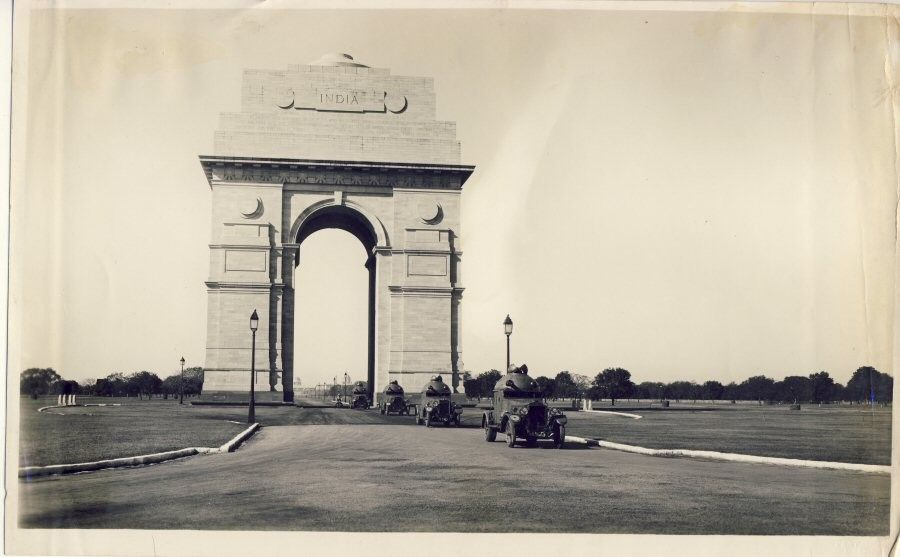

The India Gate (formerly known as the All India War Memorial) is a war memorial located astride the Rajpath on the eastern edge of the "ceremonial axis" of New Delhi, formerly called duty path. It stands as a memorial to 84,000 soldiers of the British Indian Army who died between 1914 and 1921 in the First World War, in France, Flanders, Mesopotamia, Persia, East Africa, Gallipoli and elsewhere in the Near and the Far East, and the Third Anglo-Afghan War. 13,300 servicemen's names, including some soldiers and officers from the United Kingdom, are inscribed on the gate.Designed by Sir Edwin Lutyens, the gate evokes the architectural style of the memorial arch such as the Arch of Constantine, in Rome, and is often compared to the Arc de Triomphe in Paris, and the Gateway of India in Mumbai.
Following the Bangladesh Liberation war in 1972, a structure consisting of a black marble plinth with a reversed rifle, capped by a war helmet and bounded by four eternal flames, was built beneath the archway. This structure, called Amar Jawan Jyoti (Flame of the Immortal Soldier), has since 1971 served as India's tomb of the unknown soldier. India Gate is counted amongst the largest war memorials in India and every Republic Day, the Prime Minister visits the gate to pay their tributes to the Amar Jawan Jyoti, following which the Republic Day parade starts. India Gate is often a location for civil society protests.

The India Gate was part of the work of the Imperial War Graves Commission (IWGC), which came into existence in December 1918 under the British rule for building war graves and memorials to soldiers who were killed in the First World War. The foundation stone of the gate then called the All India War Memorial, was laid on 10 February 1921, at 16:30, by the visiting Duke of Connaught in a ceremony attended by Officers and Men of the British Indian Army, Imperial Service Troops, the Commander in Chief, and Chelmsford, the viceroy
Design and structure
The memorial gate was designed by Sir Edwin Lutyens, who was not only the main architect of New Delhi but also a member of the Imperial War Graves Commission and one of Europe's foremost designers of war graves and memorials. The India gate, which has been called a "creative reworking of the Arc de Triomphe" has a span of 30 feet and lies on the eastern axial end of Kingsway, present-day Kartavya Path, the central vista and main ceremonial procession route in New Delhi.The 42-metre (138-foot)-tall India gate, stands on a low base of red Bharatpur stone and rises in stages to a huge moulding.
Inscriptions
The cornice of the India Gate is inscribed with Imperial suns while both sides of the arch have INDIA, flanked by the dates MCMXIV ('1914'on the left) and MCMXIX ('1919'on the right). Below the word INDIA, in capital letters